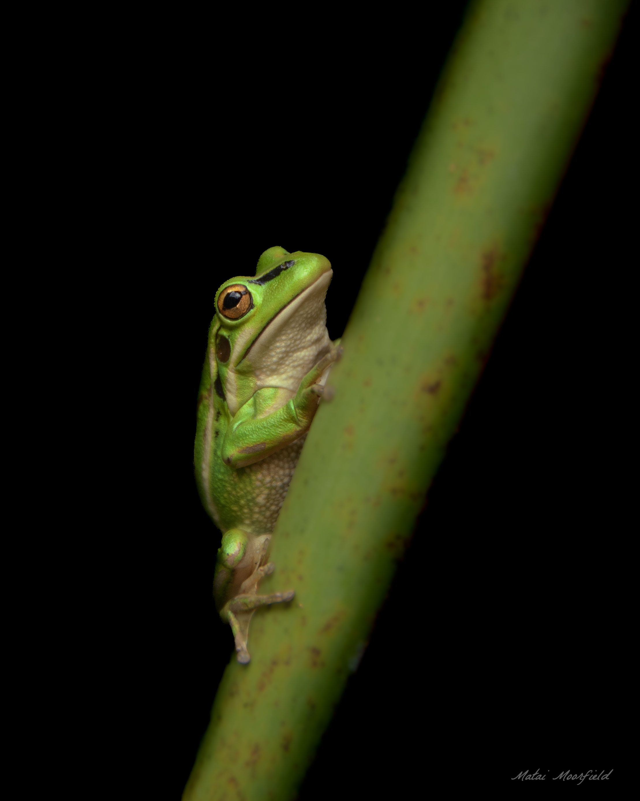
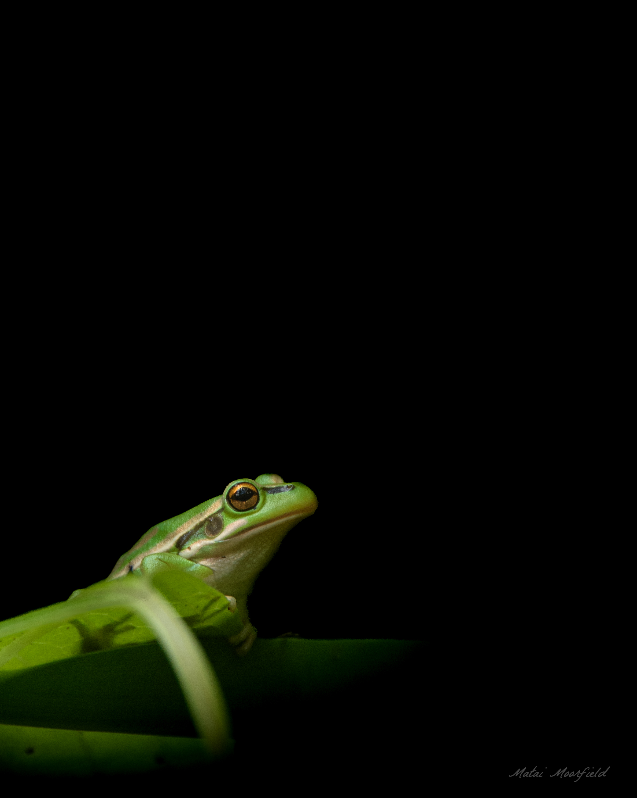

Green and Golden Bell Frog
The Green and Golden Bell Frog (Litoria aurea) is a vibrant amphibian, native to eastern Australia, that has found a second home in New Zealand. Introduced in the late 19th century, this species has successfully established itself, primarily in the upper North Island. While the frog's presence in New Zealand is often seen as a conservation paradox—a thriving population of a species declining in its native range—its ecological role and impact on the New Zealand environment are complex and continue to be studied.
Origins and Establishment in New Zealand
The story of the Green and Golden Bell Frog in New Zealand began in the 1860s. Driven by the desires of acclimatisation societies, these frogs were intentionally introduced from Sydney. These societies aimed to introduce various non-native species, often to create a fauna more reminiscent of Europe, or to serve as biological control agents. While releases were attempted in various locations, the Green and Golden Bell Frog primarily established itself in the warmer, northern parts of the North Island. This successful colonization can be attributed to several factors, including the availability of suitable habitat and a relative lack of natural predators.
Ecological Characteristics and Habitat
Green and Golden Bell Frogs are relatively large frogs, with females growing significantly larger than males. Their appearance is striking, characterized by smooth, bright green skin interspersed with patches of gold or bronze. This coloration provides effective camouflage in their preferred habitats.
In New Zealand, these frogs are typically found in a range of damp or aquatic environments. They favor habitats such as:
- Ponds and streams
- Swamps and wetlands
- Dune-lands
- Modified environments like farmland, roadside ditches, and urban areas with suitable water bodies
A key habitat requirement is the presence of shallow water bodies, often with emergent vegetation, for breeding. They are frequently found in areas that are open and sunny, as they are known to bask in the sun—a somewhat unusual behavior among frogs.
Life Cycle and Behavior
The Green and Golden Bell Frog has a typical amphibian life cycle. Breeding occurs during the warmer months, from spring to summer. Males congregate around water bodies and produce a distinctive, deep, guttural call to attract females. Females lay large numbers of eggs, which hatch into tadpoles. The tadpole stage is aquatic, and tadpoles feed on algae and detritus. Metamorphosis into juvenile frogs occurs after a period of several weeks to months, depending on environmental conditions.
Adult Green and Golden Bell Frogs are opportunistic predators. Their diet includes a wide variety of invertebrates, such as insects, as well as other frogs (including their own species) and small vertebrates. This generalist feeding behavior contributes to their ability to thrive in diverse environments.
Conservation Status: A Paradoxical Situation
The conservation status of the Green and Golden Bell Frog presents a paradox. In their native Australia, the species has experienced significant population declines and is classified as Vulnerable. The primary threats to Australian populations include:
- Habitat loss and degradation
- Disease, particularly chytridiomycosis (caused by the amphibian chytrid fungus)
- Predation by introduced species
- Pollution
In stark contrast, in New Zealand, the Green and Golden Bell Frog is classified as "Introduced and Naturalised" and is not considered threatened. Indeed, the relatively healthy populations in New Zealand have, at times, been considered a potential резерв for the species.

Ecological Impacts and Management Considerations
While the Green and Golden Bell Frog has established itself successfully in New Zealand, its presence is not without ecological implications. As an introduced species, it has the potential to impact native ecosystems. Potential impacts include:
- Predation on native species: Green and Golden Bell Frogs are known to consume a variety of prey, and there is a risk that they may prey on native invertebrates or even small vertebrates.
- Competition: Competition with native species for resources, though the extent of competition with New Zealand's unique native frog species (*Leiopelma*) is limited, as their habitats don't overlap significantly.
- Disease transmission: The role of Green and Golden Bell Frogs in the transmission of diseases, such as chytridiomycosis, to native amphibians is a concern, although the full extent of this risk is still being studied.
Management of Green and Golden Bell Frogs in New Zealand is complex. Given that the species is well-established and not considered a conservation concern within the country, there is no widespread effort to control their populations. However, ongoing research and monitoring are important to understand their ecological role and potential impacts.
Conclusion
The Green and Golden Bell Frog in New Zealand represents a fascinating case study in introduced species ecology. Its successful establishment and thriving populations offer a contrast to its declining status in its native Australia. While the frog has become a naturalized part of New Zealand's fauna, its ecological impacts require ongoing attention. Balancing the conservation of a threatened species in its native range with the management of its introduced populations in a new environment presents complex challenges for conservationists and land managers.
© 2025 Matai Moorfield. All rights reserved.
All photographs on this website are protected by copyright and are the property of Matai Moorfield. Unauthorised use, reproduction, or distribution of these images is strictly prohibited. For inquiries regarding licensing, please contact matai@moorfield.co.nz